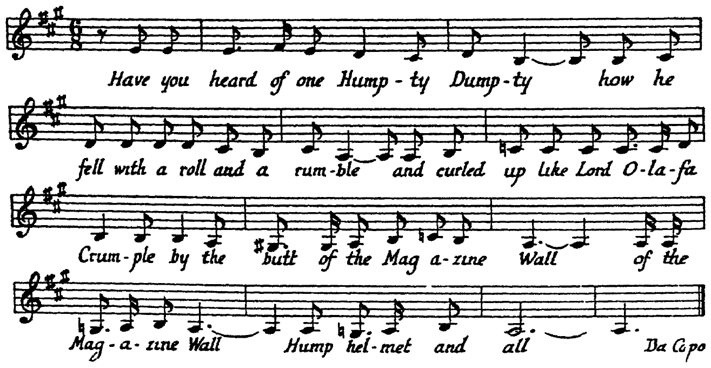

| reverse | compact | indexed |
[p030-chapter]
[p030-01]
ט Iris Trees
Now (to forebare for ever solittle of Iris Trees and Lili O'Ran-
[p030-02]
ט genesis
ט Harold
ט Humphrey
gans), concerning the genesis of Harold or Humphrey Chimp-
[p030-03]
ט occupational
ט agnomen
den's occupational agnomen (we are back in the presurnames
[p030-04]
ט prodromarith
ט enos
ט chalked
prodromarith period, of course just when enos chalked halltraps)
[p030-05]
and discarding once for all those theories from older sources which
[p030-06]
ט pivotal
would link him back with such pivotal ancestors as the Glues, the
[p030-07]
Gravys, the Northeasts, the Ankers and the Earwickers of Sidles-
[p030-08]
ט Hundred of Manhood
ט offsprout
ham in the Hundred of Manhood or proclaim him offsprout of
[p030-09]
vikings who had founded wapentake and seddled hem in Herrick
[p030-10]
ט authenticated
ט Dumlat
or Eric, the best authenticated version, the Dumlat, read the
[p030-11]
ט Hofed
Reading of Hofed-ben-Edar, has it that it was this way. We are
[p030-12]
ט cabbaging
told how in the beginning it came to pass that like cabbaging
[p030-13]
ט Cincinnatus
ט grand old gardener
ט saving daylight
Cincinnatus the grand old gardener was saving daylight under his
[p030-14]
ט redwood
ט sabbath
ט Hag
ט Chivychas
redwoodtree one sultry sabbath afternoon, Hag Chivychas Eve,
[p030-15]
in prefall paradise peace by following his plough for rootles in the
[p030-16]
ט rere
ט mobhouse
ט ye
ט marine
ט royalty
rere garden of mobhouse, ye olde marine hotel, when royalty was
[p030-17]
ט runner
announced by runner to have been pleased to have halted itself on
[p030-18]
ט highroad
ט leisure
ט dogfox
ט cast
the highroad along which a leisureloving dogfox had cast fol-
[p030-19]
ט lady pack
ט cocker spaniels
ט For
lowed, also at walking pace, by a lady pack of cocker spaniels. For-
[p030-20]
ט vassal's
ט fealty
ט ethnarch
getful of all save his vassal's plain fealty to the ethnarch Humphrey
[p030-21]
ט yoke
or Harold stayed not to yoke or saddle but stumbled out hotface
[p030-22]
ט sweatful
ט bandanna
ט pocketcoat
as he was (his sweatful bandanna loose from his pocketcoat) hast-
[p030-23]
ט forecourts
ט public
ט topee
ט surcingle
ing to the forecourts of his public in topee, surcingle, solascarf and
[p030-24]
ט plaid
ט plus fours
ט ruddled
ט cinnabar
plaid, plus fours, puttees and bulldog boots ruddled cinnabar with
[p030-scans]
Page images: 1939 Faber, 1958 Viking. Edition of 2010 (Rose and O'Hanlon): pp. 24–31, on the James Joyce Digital Archive.
01 ק A Poetry Channel: Book 1, Chapter 2, Pt. 1
01 ב Trees] 1939 1958; Frees 2010
04 ב course] 1939 1958; course, 2010
12 ב that] 1939 1958; that, 2010
13 ב Cincinnatus] 1939 1958; Cincinnatus, 2010
14 ב redwoodtree] 1939 1958; giant redwood 2010
20 ב ethnarch] 1939 1958; ethnarch, 2010
22 ב pocketcoat)] 1939 1958; pocketcoat), 2010
[p031-01]
ט flagrant
ט marl
ט turnpike
flagrant marl, jingling his turnpike keys and bearing aloft amid
[p031-02]
the fixed pikes of the hunting party a high perch atop of which a
[p031-03]
ט flowerpot
ט earthside
ט hoist
flowerpot was fixed earthside hoist with care. On his majesty, who
[p031-04]
ט feigned
ט noticeably
was, or often feigned to be, noticeably longsighted from green
[p031-05]
youth and had been meaning to inquire what, in effect, had caused
[p031-06]
ט yon
ט causeway
ט potholed
yon causeway to be thus potholed, asking substitutionally to be
[p031-07]
ט paternoster
put wise as to whether paternoster and silver doctors were not
[p031-08]
ט fancied
ט lobstertrapping
ט blunt
ט Harom
now more fancied bait for lobstertrapping honest blunt Harom-
[p031-09]
phreyld answered in no uncertain tones very similarly with a fear-
[p031-10]
ט Naw
ט yer
ט maggers
ט aw
ט jist
ט cotchin
ט thon
less forehead: Naw, yer maggers, aw war jist a cotchin on thon
[p031-11]
ט bluggy
ט earwuggers
ט sailor king
ט draining
ט gugglet
bluggy earwuggers. Our sailor king, who was draining a gugglet
[p031-12]
of obvious adamale, gift both and gorban, upon this, ceasing to
[p031-13]
swallow, smiled most heartily beneath his walrus moustaches and
[p031-14]
indulging that none too genial humour which William the Conk
[p031-15]
ט spindle side
ט lock
on the spindle side had inherited with the hereditary whitelock
[p031-16]
ט Sophy
and some shortfingeredness from his greataunt Sophy, turned to-
[p031-17]
wards two of his retinue of gallowglasses, Michael, etheling lord
[p031-18]
of Leix and Offaly and the jubilee mayor of Drogheda, Elcock,
[p031-19]
ט scatterguns
ט Manning
ט protosyndic
(the two scatterguns being Michael M. Manning, protosyndic of
[p031-20]
ט Waterford
ט excellency
ט Giubilei
Waterford and an Italian excellency named Giubilei according to
[p031-21]
a later version cited by the learned scholarch Canavan of Can-
[p031-22]
ט triptychal
makenoise), in either case a triptychal religious family symbolising
[p031-23]
ט puritas
ט doctrina
ט business per usuals
puritas of doctrina, business per usuals and the purchypatch of
[p031-24]
ט hamlock
ט preties
ט dilsydul
hamlock where the paddish preties grow and remarked dilsydul-
[p031-25]
ט Holybones
ט red brother
sily: Holybones of Saint Hubert how our red brother of Pour-
[p031-26]
ingrainia would audibly fume did he know that we have for sur-
[p031-27]
trusty bailiwick a turnpiker who is by turns a pikebailer no sel-
[p031-28]
domer than an earwigger! For he kinned Jom Pill with his court
[p031-29]
ט haunts
so gray and his haunts in his house in the mourning. (One still
[p031-30]
ט crusted
ט laughta
ט cheery
hears that pebble crusted laughta, japijap cheerycherrily, among
[p031-31]
ט roadside
ט Holmpatrick
the roadside tree the lady Holmpatrick planted and still one feels
[p031-32]
the amossive silence of the cladstone allegibelling: Ive mies outs
[p031-33]
ide Bourn.) Comes the question are these the facts of his nom-
[p031-34]
ט accolated
inigentilisation as recorded and accolated in both or either of the
[p031-35]
ט collateral
ט andrewpaulmurphyc
ט narratives
ט fata
collateral andrewpaulmurphyc narratives. Are those their fata
[p031-36]
which we read in sibylline between the fas and its nefas? No dung
[p031-scans]
Page images: 1939 Faber, 1958 Viking. Edition of 2010 (Rose and O'Hanlon): pp. 31–25, on the James Joyce Digital Archive.
06 ב asking substitutionally] 1939 1958; asking, substitutionally, 2010
08 ב lobstertrapping] 1939 1958; lobstertrapping, 2010
13 ב and] 1939 1958; and, 2010
18 ב Offaly] 1939 1958; Offaly, 2010
20 ב Waterford] 1939 1958; Waterford, 2010
24 ב grow] 1939 1958; grow), 2010
25 ב Hubert] 1939 1958; Hubert, 2010
30 ב pebble crusted laughta,] 1939 1958; pebblecrusted laughter, 2010
33 ב question] 1939 1958; question: 2010
35 ב narratives.] 1939 1958; narratives? 2010
[p032-01]
on the road? And shall Nohomiah be our place like? Yea, Mulachy
[p032-02]
ט khan
our kingable khan? We shall perhaps not so soon see. Pinck
[p032-03]
ט scen
poncks that bail for seeks alicence where cumsceptres with scen-
[p032-04]
taurs stay. Bear in mind, son of Hokmah, if so be you have me-
[p032-05]
ט changeth
theg in your midness, this man is mountain and unto changeth
[p032-06]
ט doth
ט Heave
ט fallacy
ט punical
ט finikin
doth one ascend. Heave we aside the fallacy, as punical as finikin,
[p032-07]
ט kingself
that it was not the king kingself but his inseparable sisters, un-
[p032-08]
controllable nighttalkers, Skertsiraizde with Donyahzade, who
[p032-09]
afterwards, when the robberers shot up the socialights, came down
[p032-10]
into the world as amusers and were staged by Madame Sudlow
[p032-11]
ט Miskinguette
ט pantalime
ט pitts
as Rosa and Lily Miskinguette in the pantalime that two pitts
[p032-12]
ט paythronosed
ט Galathee
paythronosed, Miliodorus and Galathee. The great fact emerges
[p032-13]
ט holographs
ט exhumed
that after that historic date all holographs so far exhumed ini-
[p032-14]
ט sigla
tialled by Haromphrey bear the sigla H.C.E. and while he was
[p032-15]
only and long and always good Dook Umphrey for the hunger-
[p032-16]
ט spalpeens
ט Lucalizod
ט Chimbers
ט cronies
lean spalpeens of Lucalizod and Chimbers to his cronies it was
[p032-17]
ט populace
equally certainly a pleasant turn of the populace which gave him
[p032-18]
ט normative
as sense of those normative letters the nickname Here Comes
[p032-19]
ט imposing
Everybody. An imposing everybody he always indeed looked,
[p032-20]
constantly the same as and equal to himself and magnificently well
[p032-21]
worthy of any and all such universalisation, every time he con-
[p032-22]
ט surveyed
ט vociferatings
tinually surveyed, amid vociferatings from in front of Accept these
[p032-23]
few nutties! and Take off that white hat!, relieved with Stop his Grog
[p032-24]
and Put It in the Log and Loots in his (bassvoco) Boots, from good
[p032-25]
start to happy finish the truly catholic assemblage gathered together
[p032-26]
ט treat house
ט satin
ט lustre
ט floats
in that king's treat house of satin alustrelike above floats and foot-
[p032-27]
ט veldts
ט oxgangs
ט unanimously
ט clap
lights from their assbawlveldts and oxgangs unanimously to clap-
[p032-28]
plaud (the inspiration of his lifetime and the hits of their careers)
[p032-29]
ט Semper
ט immergreen
ט tourers
Mr Wallenstein Washington Semperkelly's immergreen tourers
[p032-30]
ט command performance
ט courteous
in a command performance by special request with the courteous
[p032-31]
permission for pious purposes the homedromed and enliventh
[p032-32]
ט millentury
performance of the problem passion play of the millentury, running
[p032-33]
strong since creation, A Royal Divorce, then near the approach
[p032-34]
ט ambitious
towards the summit of its climax, with ambitious interval band
[p032-35]
selections from The Bo' Girl and The Lily on all horserie show
[p032-36]
ט command nights
ט viceregal
ט booth
ט ceil
command nights from his viceregal booth (his bossaloner is ceil-
[p032-scans]
Page images: 1939 Faber, 1958 Viking. Edition of 2010 (Rose and O'Hanlon): pp. 25–26, on the James Joyce Digital Archive.
[p033-01]
ט cuckoospit
inged there a cuckoospit less eminent than the redritualhoods of
[p033-02]
Maccabe and Cullen) where, a veritable Napoleon the Nth, our
[p033-03]
worldstage's practical jokepiece and retired cecelticocommediant
[p033-04]
ט forefather
in his own wise, this folksforefather all of the time sat, having the
[p033-05]
ט invariable
entirety of his house about him, with the invariable broadstretched
[p033-06]
ט kerchief
ט shoulderblades
kerchief cooling his whole neck, nape and shoulderblades and in
[p033-07]
a wardrobe panelled tuxedo completely thrown back from a shirt
[p033-08]
ט outstarching
well entitled a swallowall, on every point far outstarching the
[p033-09]
ט laundered
ט clawhammers
ט marbletopped
ט highboys
ט pit
laundered clawhammers and marbletopped highboys of the pit
[p033-10]
ט stalls
stalls and early amphitheatre. The piece was this: look at the lamps.
[p033-11]
ט cast
The cast was thus: see under the clock. Ladies circle: cloaks may
[p033-12]
ט parterre
ט standing room
ט Habituels
be left. Pit, prommer and parterre, standing room only. Habituels
[p033-13]
ט conspicuously
ט emergent
conspicuously emergent.
[p033-14]
ט baser
A baser meaning has been read into these characters the literal
[p033-15]
ט blur
sense of which decency can safely scarcely hint. It has been blur-
[p033-16]
ט bruited
ט wisecrackers
ט Mohorat
tingly bruited by certain wisecrackers (the stinks of Mohorat are
[p033-17]
ט vile
in the nightplots of the morning), that he suffered from a vile
[p033-18]
disease. Athma, unmanner them! To such a suggestion the one
[p033-19]
selfrespecting answer is to affirm that there are certain statements
[p033-20]
which ought not to be, and one should like to hope to be able to
[p033-21]
ט detractors
add, ought not to be allowed to be made. Nor have his detractors,
[p033-22]
ט imperfectly
ט warmblooded
who, an imperfectly warmblooded race, apparently conceive him
[p033-23]
ט caterpillar
ט enormity
as a great white caterpillar capable of any and every enormity in
[p033-24]
the calendar recorded to the discredit of the Juke and Kellikek
[p033-25]
ט mended
ט alternately
ט lay
families, mended their case by insinuating that, alternately, he lay
[p033-26]
ט ludicrous
ט imputation
at one time under the ludicrous imputation of annoying Welsh
[p033-27]
fusiliers in the people's park. Hay, hay, hay! Hoq, hoq, hoq!
[p033-28]
Faun and Flora on the lea love that little old joq. To anyone who
[p033-29]
knew and loved the christlikeness of the big cleanminded giant
[p033-30]
ט throughout
ט excellency
ט vicefreegal
H. C. Earwicker throughout his excellency long vicefreegal exis-
[p033-31]
ט sleuth
tence the mere suggestion of him as a lustsleuth nosing for trou-
[p033-32]
ט boobytrap
ט preposterous
ble in a boobytrap rings particularly preposterous. Truth, beard
[p033-33]
on prophet, compels one to add that there is said to have been
[p033-34]
quondam (pfuit! pfuit!) some case of the kind implicating, it is
[p033-35]
interdum believed, a quidam (if he did not exist it would be ne-
[p033-36]
ט quoniam
ט stambuling
ט ha
cessary quoniam to invent him) abhout that time stambuling ha-
[p033-scans]
Page images: 1939 Faber, 1958 Viking. Edition of 2010 (Rose and O'Hanlon): pp. 26–27, on the James Joyce Digital Archive.
[p034-01]
ט leaky
ט sneakers
ט tarrk record
round Dumbaling in leaky sneakers with his tarrk record who
[p034-02]
has remained topantically anonymos but (let us hue him Abdul-
[p034-03]
ט Gamellaxarksky
ט posted
ט Mallon's
lah Gamellaxarksky) was, it is stated, posted at Mallon's at the
[p034-04]
ט instance
ט watch
ט vigilance committee
instance of watch warriors of the vigilance committee and years
[p034-05]
afterwards, cries one even greater, Ibid, a commender of the
[p034-06]
frightful, seemingly, unto such as were sulhan sated, tropped head
[p034-07]
ט pfiat
(pfiat! pfiat!) waiting his first of the month froods turn for
[p034-08]
thatt chopp pah kabbakks alicubi on the old house for the charge-
[p034-09]
hard, Roche Haddocks off Hawkins Street. Lowe, you blondy
[p034-10]
liar, Gob scene you in the narked place and she what's edith ar
[p034-11]
home defileth these boyles! There's a cabful of bash indeed in
[p034-12]
the homeur of that meal. Slander, let it lie its flattest, has never
[p034-13]
ט Southron
been able to convict our good and great and no ordinary Southron
[p034-14]
ט homogenius
Earwicker, that homogenius man, as a pious author called him, of
[p034-15]
ט graver
ט impropriety
ט woodwards
any graver impropriety than that, advanced by some woodwards
[p034-16]
or regarders, who did not dare deny, the shomers, that they had,
[p034-17]
chin Ted, chin Tam, chinchin Taffyd, that day consumed their
[p034-18]
ט ongentilmensky
ט im
soul of the corn, of having behaved with ongentilmensky im-
[p034-19]
ט dainty
ט maidservants
ט swoolth
modus opposite a pair of dainty maidservants in the swoolth of
[p034-20]
ט rushy
ט hollow
ט whither
ט pinners
the rushy hollow whither, or so the two gown and pinners plead-
[p034-21]
ט nature
ed, dame nature in all innocency had spontaneously and about the
[p034-22]
ט eventide
same hour of the eventide sent them both but whose published
[p034-23]
ט testimonies
combinations of silkinlaine testimonies are, where not dubiously
[p034-24]
pure, visibly divergent, as wapt from wept, on minor points touch-
[p034-25]
ing the intimate nature of this, a first offence in vert or venison
[p034-26]
ט incautious
which was admittedly an incautious but, at its wildest, a partial ex-
[p034-27]
ט attenuating
ט gaddeth
posure with such attenuating circumstances (garthen gaddeth green
[p034-28]
ט hwere
ט sokeman
ט brideth
hwere sokeman brideth girling) as an abnormal Saint Swithin's
[p034-29]
ט Jesses
ט Rosasharon
summer and, (Jesses Rosasharon!) a ripe occasion to provoke it.
[p034-30]
We can't do without them. Wives, rush to the restyours! Of-
[p034-31]
ט toman
ט led
ט lol
ט kadem
man will toman while led is the lol. Zessid's our kadem, villa-
[p034-32]
ט vollapluck
ט Fikup
ט flesh nelly
ט mundo nov
ט flen
pleach, vollapluck. Fikup, for flesh nelly, el mundo nov, zole flen!
[p034-33]
ט lilyth
ט Pauline
ט malers
ט abushed
If she's a lilyth, pull early! Pauline, allow! And malers abushed,
[p034-34]
ט keep black
keep black, keep black! Guiltless of much laid to him he was
[p034-35]
clearly for once at least he clearly expressed himself as being with
[p034-36]
still a trace of his erstwhile burr and hence it has been received of
[p034-scans]
Page images: 1939 Faber, 1958 Viking. Edition of 2010 (Rose and O'Hanlon): p. 27, on the James Joyce Digital Archive.
10 ב ar] 1939 1958; at 2010
14 ב as] 1939 1958; as a 2010
14 ב called] 1939 1958; calls 2010
16 ב regarders,] 1939 1958; regarders 2010
18 ב with] 1939 1958; with an 2010
21 ב dame nature] 1939 1958; Dame Nature 2010
24 ב wapt] 1939 1958; warpt 2010
25 ב 1939 prints this line and the next (34.26) in the reverse order
28 ב brideth] 1939 1958; hrideth 2010
29 ב and,] 1939 1958; and 2010
30 ב restyours!] 1939 1958; restgowns! 2010
32 ב nelly,] 1939 1958; Nellij, 2010
32 ב zole] 1939 1958; ole 2010
35 ב for] 1939 1958; for so 2010
35 ב expressed himself as being] 1939 1958; and 2010
36 ב burr] 1939 1958; burr expressed himself as being 2010
[p035-01]
ט amalgam
us that it is true. They tell the story (an amalgam as absorbing as
[p035-02]
ט chloereydes
ט hydrophobe
ט sponges
calzium chloereydes and hydrophobe sponges could make it) how
[p035-03]
ט happygogusty
ט Ides-of-April
one happygogusty Ides-of-April morning (the anniversary, as it
[p035-04]
ט assumption
ט mirthday suit
fell out, of his first assumption of his mirthday suit and rights in
[p035-05]
ט appurtenance
ט confusioning
appurtenance to the confusioning of human races) ages and ages
[p035-06]
ט misdemeanour
ט tried
after the alleged misdemeanour when the tried friend of all crea-
[p035-07]
ט tigerwood
ט staff
ט stay
ט billowing
tion, tigerwood roadstaff to his stay, was billowing across the
[p035-08]
ט expanse
ט caoutchouc
ט kepi
wide expanse of our greatest park in his caoutchouc kepi and
[p035-09]
great belt and hideinsacks and his blaufunx fustian and ironsides
[p035-10]
ט jackboots
ט Bhagafat
ט rubberised
ט inverness
jackboots and Bhagafat gaiters and his rubberised inverness, he
[p035-11]
ט luciferant
ט oriuolate
met a cad with a pipe. The latter, the luciferant not the oriuolate
[p035-12]
ט odds
ט berting dagabout
(who, the odds are, is still berting dagabout in the same straw
[p035-13]
ט bamer
ט overgoat
ט schulder
ט sheepside
bamer, carryin his overgoat under his schulder, sheepside out, so
[p035-14]
ט coumfry
ט signing the pledge
as to look more like a coumfry gentleman and signing the pledge
[p035-15]
as gaily as you please) hardily accosted him with: Guinness thaw
[p035-16]
ט Pool
tool in jew me dinner ouzel fin? (a nice how-do-you-do in Pool-
[p035-17]
ט tremblingly
black at the time as some of our olddaisers may still tremblingly
[p035-18]
recall) to ask could he tell him how much a clock it was that the
[p035-19]
clock struck had he any idea by cock's luck as his watch was
[p035-20]
ט bradys
ט evitated
ט Execration
bradys. Hesitency was clearly to be evitated. Execration as cleverly
[p035-21]
to be honnisoid. The Earwicker of that spurring instant, realising
[p035-22]
ט nexally
on fundamental liberal principles the supreme importance, nexally
[p035-23]
and noxally, of physical life (the nearest help relay being pingping
[p035-24]
ט K. O
ט Sempatrick's
K. O. Sempatrick's Day and the fenian rising) and unwishful as
[p035-25]
he felt of being hurled into eternity right then, plugged by a soft-
[p035-26]
ט sap
nosed bullet from the sap, halted, quick on the draw, and reply-
[p035-27]
ט tipstaff
ט cue
ט prodooced
in that he was feelin tipstaff, cue, prodooced from his gunpocket
[p035-28]
his Jurgensen's shrapnel waterbury, ours by communionism, his
[p035-29]
ט usucapture
ט skirl
by usucapture, but, on the same stroke, hearing above the skirl-
[p035-30]
ט Fox Goodman
ט bellmaster
ing of harsh Mother East old Fox Goodman, the bellmaster, over
[p035-31]
the wastes to south, at work upon the ten ton tonuant thunder-
[p035-32]
ט toller
ous tenor toller in the speckled church (Couhounin's call!) told
[p035-33]
ט kidder
ט Jehova
ט sidereal
the inquiring kidder, by Jehova, it was twelve of em sidereal and
[p035-34]
tankard time, adding, buttall, as he bended deeply with smoked
[p035-35]
ט pondus
ט copperstick
sardinish breath to give more pondus to the copperstick he pre-
[p035-36]
sented, (though this seems in some cumfusium with the chap-
[p035-scans]
Page images: 1939 Faber, 1958 Viking. Edition of 2010 (Rose and O'Hanlon): pp. 27–28, on the James Joyce Digital Archive.
03 ב happygogusty Ides-of-April] 1939 1958; happy-go-gusty Ides-of-April 2010
10 ב inverness,] 1939 1958; inverness 2010
11 ב met] 1939 1958; MET 2010
11 ב oriuolate (who, the odds are,] 1939 1958; oriuolate, who(the odds are) 2010
12 ב dagabout] 1939 1958; dagobout 2010
13 ב carryin] 1939 1958; carrying 2010
15 ב please)] 1939 1958; please, 2010
18 ב a clock] 1939 1958; a'clock 2010
19 ב cock's] 1939 1958; o'cock's 2010
24 ב K. O. Sempatrick's] 1939 1958; K.O. Senpatrick's 2010
26 ב and] 1939 1958; and, 2010
32 ב call!)] 1939 1958; call!), 2010
33 ב Jehova,] 1939 1958; Johova, 2010
34 ב adding,] 1939 1958; adding 2010
34 ב deeply] 1939 1958; deeply, 2010
35 ב breath] 1939 1958; breath, 2010
[p036-01]
ט ginger
stuck ginger which, as being of sours, acids, salts, sweets and
[p036-02]
ט chaw
bitters compompounded, we know him to have used as chaw-
[p036-03]
ט vimvital
chaw for bone, muscle, blood, flesh and vimvital,) that where-
[p036-04]
ט haku
as the hakusay accusation againstm had been made, what was
[p036-05]
ט quarters
ט Morganspost
known in high quarters as was stood stated in Morganspost, by
[p036-06]
ט youman
a creature in youman form who was quite beneath parr and seve-
[p036-07]
ט triplehydrad
ral degrees lower than yore triplehydrad snake. In greater sup-
[p036-08]
ט quaint
port of his word (it, quaint anticipation of a famous phrase, has
[p036-09]
been reconstricted out of oral style into the verbal for all time
[p036-10]
ט quiritary
ט quietude
ט toosammen
with ritual rhythmics, in quiritary quietude, and toosammen-
[p036-11]
stucked from successive accounts by Noah Webster in the re-
[p036-12]
ט Attributive
daction known as the Sayings Attributive of H. C. Earwicker,
[p036-13]
prize on schillings, postlots free), the flaxen Gygas tapped his
[p036-14]
ט chronometrum
chronometrum drumdrum and, now standing full erect, above
[p036-15]
ט ambi
ט floodplain
the ambijacent floodplain, scene of its happening, with one Ber-
[p036-16]
ט gauntlet
ט hough
ט ellboge
lin gauntlet chopstuck in the hough of his ellboge (by ancientest
[p036-17]
ט lore
signlore his gesture meaning: Ǝ!) pointed at an angle of thirty-
[p036-18]
ט duc de Fer's
ט overgrown
ט milestone
two degrees towards his duc de Fer's overgrown milestone as
[p036-19]
fellow to his gage and after a rendypresent pause averred with
[p036-20]
ט shake
solemn emotion's fire: Shsh shake, co-comeraid! Me only, them
[p036-21]
five ones, he is equal combat. I have won straight. Hence my
[p036-22]
nonation wide hotel and creamery establishments which for the
[p036-23]
ט credit
honours of our mewmew mutual daughters, credit me, I am woo-
[p036-24]
woo willing to take my stand, sir, upon the monument, that sign
[p036-25]
ט redemption
ט hygienic
of our ruru redemption, any hygienic day to this hour and to
[p036-26]
ט hoath
make my hoath to my sinnfinners, even if I get life for it, upon
[p036-27]
ט Taskmaster's
the Open Bible and before the Great Taskmaster's (I lift my hat!)
[p036-28]
and in the presence of the Deity Itself andwell of Bishop and
[p036-29]
ט Michan
Mrs Michan of High Church of England as of all such of said
[p036-30]
ט withdwellers
ט sohole
my immediate withdwellers and of every living sohole in every
[p036-31]
ט wheresoever
corner wheresoever of this globe in general which useth of my
[p036-32]
ט backbone
ט commutative justice
British to my backbone tongue and commutative justice that
[p036-33]
ט tittle
there is not one tittle of truth, allow me to tell you, in that purest
[p036-34]
of fibfib fabrications.
[p036-35]
Gaping Gill, swift to mate errthors, stern to checkself, (diag-
[p036-36]
ט eustacetube
ט markedly
nosing through eustacetube that it was to make with a markedly
[p036-scans]
Page images: 1939 Faber, 1958 Viking. Edition of 2010 (Rose and O'Hanlon): pp. 28–29, on the James Joyce Digital Archive.
03 ב vimvital,)] 1939 1958; vimvitals), 2010
04 ב was] 1939 1958; was well 2010
05 ב quarters] 1939 1958; quarters, 2010
13 ב on] 1939 1958; one 2010
13 ב free),] 1939 1958; free) 2010
14 ב erect,] 1939 1958; erect 2010
15 ב happening,] 1939 1958; happenence, 2010
17 ב Ǝ!)] 1939 1958; y!) 2010
18 ב as] 1939 1958; as the 2010
19 ב rendypresent] 1939 1958; readypresent 2010
22 ב nonation wide] 1939 1958; no-nationwide 2010
26 ב my] 1939 1958; my dear 2010
27 ב and] 1939 1958; and befu 2010
27 ב Taskmaster's] 1939 1958; Taskmaster's eye 2010
28 ב presence] 1939 1958; Presence 2010
35 ב (diagnosing] 1939 1958; om. 2010
36 ב through] 1939 1958; through his 2010
[p037-01]
ט postpuberal
ט tituitary
ט Heidelberg mannleich
postpuberal hypertituitary type of Heidelberg mannleich cavern
[p037-02]
ט lufted
ט sloping
ט Sweatagore
ethics) lufted his slopingforward, bad Sweatagore good mur-
[p037-03]
ט greedly
rough and dublnotch on to it as he was greedly obliged, and
[p037-04]
ט ham
like a sensible ham, with infinite tact in the delicate situation seen
[p037-05]
the touchy nature of its perilous theme, thanked um for guilders
[p037-06]
received and time of day (not a little token abock all the same that
[p037-07]
that was owl the God's clock it was) and, upon humble duty to
[p037-08]
ט Tysk
greet his Tyskminister and he shall gildthegap Gaper and thee his
[p037-09]
a mouldy voids, went about his business, whoever it was, saluting
[p037-10]
corpses, as a metter of corse (one could hound him out had one
[p037-11]
ט monticules
ט dandruff
ט blaze
hart to for the monticules of scalp and dandruff droppings blaze
[p037-12]
his trail) accompanied by his trusty snorler and his permanent
[p037-13]
reflection, verbigracious; I have met with you, bird, too late,
[p037-14]
ט tag
or if not, too worm and early: and with tag for ildiot repeated
[p037-15]
ט bigtimer's
in his secondmouth language as many of the bigtimer's verbaten
[p037-16]
ט kveldeve
words which he could balbly call to memory that same kveldeve,
[p037-17]
ט twattering
ט between
ere the hour of the twattering of bards in the twitterlitter between
[p037-18]
ט suppertide
ט souvenir
Druidia and the Deepsleep Sea, when suppertide and souvenir to
[p037-19]
ט Charlatan
ט Mall
ט jointly
ט darkenings
Charlatan Mall jointly kem gently and along the quiet darkenings
[p037-20]
of Grand and Royal, ff, flitmansfluh, and, kk, 't crept i' hedge
[p037-21]
whenas to many a softongue's pawkytalk mude unswer u sufter
[p037-22]
ט poghyogh
ט aquiassent
poghyogh, Arvanda always aquiassent, while, studying castelles
[p037-23]
in the blowne and studding cowshots over the noran, he spat in
[p037-24]
ט convertedness
ט musaic
ט dispensation
ט hearthstone
careful convertedness a musaic dispensation about his hearthstone,
[p037-25]
ט saliva
ט mawshe dho hole
if you please, (Irish saliva, mawshe dho hole, but would a respect-
[p037-26]
ט ascendances
able prominently connected fellow of Iro-European ascendances
[p037-27]
with welldressed ideas who knew the correct thing such as Mr
[p037-28]
ט expectorate
ט callous
Shallwesigh or Mr Shallwelaugh expectorate after such a callous
[p037-29]
ט belcher
fashion, no thank yous! when he had his belcher spuckertuck in his
[p037-30]
ט pucket
ט musefed
ט thockits
ט supped
pucket, pthuck?) musefed with his thockits after having supped
[p037-31]
ט dish sot
ט pottage
ט dabbed
of the dish sot and pottage which he snobbishly dabbed Peach
[p037-32]
ט rawly
ט Lukanpukan
Bombay (it is rawly only Lukanpukan pilzenpie which she knows
[p037-33]
ט senaffed
ט pibered
ט excelling
which senaffed and pibered him), a supreme of excelling peas,
[p037-34]
ט balled
ט minnshogue's
ט winesour
ט pro
balled under minnshogue's milk into whitemalt winesour, a pro-
[p037-35]
ט bilker
ט hoarsely
ט relished
ט chaff
ט snevel
viant the littlebilker hoarsely relished, chaff it, in the snevel season,
[p037-36]
being as fain o't as your rat wi'fennel; and on this celebrating
[p037-scans]
Page images: 1939 Faber, 1958 Viking. Edition of 2010 (Rose and O'Hanlon): pp. 29–30, on the James Joyce Digital Archive.
01 ב hypertituitary] 1939 1958; hyperpituitary 2010
02 ב ethics)] 1939 1958; ethics, 2010
06 ב and] 1939 1958; and the 2010
11 ב the lines from here on are divided differently in 1939 and 1958
11 ב to] 1939 1958; to, 2010
12 ב trail)] 1939 1958; trail), 2010
12 ב snorler] 1939 1958; snarler 2010
13 ב reflection, verbigracious;] 1939 1958; reflection, verbigracious: 2010
14 ב and] 1939 1958; and erebusqued 2010
21 ב softongue's] 1939 1958; softtongue's 2010
22 ב poghyogh,] 1939 1958; poghyyogh, 2010
25 ב please,] 1939 1958; pleases 2010
29 ב no] 1939 1958; no, 2010
30 ב pthuck?)] 1939 1958; pthuck?), 2010
33 ב peas,] 1939 1958; peas 2010
[p038-01]
ט crowning
occasion of the happy escape, for a crowning of pot valiance,
[p038-02]
ט platter
ט benjamin
ט bouillis
ט spolish
this regional platter, benjamin of bouillis, with a spolish olive to
[p038-03]
ט zaynith
ט porkograso
ט ere
middlepoint its zaynith, was marrying itself (porkograso!) ere-
[p038-04]
ט deluxiously
ט Phenice-Bruerie
ט 98
busqued very deluxiously with a bottle of Phenice-Bruerie '98,
[p038-05]
ט nuptials
followed for second nuptials by a Piessporter, Grand Cur, of
[p038-06]
both of which cherished tablelights (though humble the bounquet
[p038-07]
ט leaman's
ט obdurately
'tis a leaman's farewell) he obdurately sniffed the cobwebcrusted
[p038-08]
corks.
[p038-09]
Our cad's bit of strife (knee Bareniece Maxwelton) with a quick
[p038-10]
ט spittoons
ט aftertale
ט hath
ear for spittoons (as the aftertale hath it) glaned up as usual with
[p038-11]
ט dumbestic
ט husbandry
ט persicks
ט armelians
ט Pome
dumbestic husbandry (no persicks and armelians for thee, Pome-
[p038-12]
ranzia!) but, slipping the clav in her claw, broke of the matter
[p038-13]
ט curtsey
among a hundred and eleven others in her usual curtsey (how
[p038-14]
ט vhespers
ט secret
ט pispigliando
ט amad
faint these first vhespers womanly are, a secret pispigliando, amad
[p038-15]
ט lavurdy den
ט manfolker
the lavurdy den of their manfolker!) the next night nudge one
[p038-16]
as was Hegesippus over a hup a ' chee, her eys dry and small and
[p038-17]
ט thicklish
speech thicklish because he appeared a funny colour like he
[p038-18]
couldn't stood they old hens no longer, to her particular reverend,
[p038-19]
the director, whom she had been meaning in her mind primarily
[p038-20]
ט hosch
ט intra
ט jist
ט timblespoon
to speak with (hosch, intra! jist a timblespoon!) trusting, between
[p038-21]
cuppled lips and annie lawrie promises (mighshe never have
[p038-22]
ט pudden
ט come
ט pecklapitschens
Esnekerry pudden come Hunanov for her pecklapitschens!) that
[p038-23]
the gossiple so delivered in his epistolear, buried teatoastally in
[p038-24]
their Irish stew would go no further than his jesuit's cloth, yet
[p038-25]
(in vinars venitas! volatiles valetotum!) it was this overspoiled
[p038-26]
ט vincentian
priest Mr Browne, disguised as a vincentian, who, when seized
[p038-27]
ט overheard
of the facts, was overheard, in his secondary personality as a
[p038-28]
ט reared
Nolan and underreared, poul soul, by accident — if, that is, the
[p038-29]
ט ruah
ט Ecclectiastes
incident it was an accident for here the ruah of Ecclectiastes
[p038-30]
ט outpuffs
ט Havvah-ban-Annah
of Hippo outpuffs the writress of Havvah-ban-Annah — to
[p038-31]
ט pianissime
ט varied
ט confidentials
pianissime a slightly varied version of Crookedribs confidentials,
[p038-32]
ט between
(what Mere Aloyse said but for Jesuphine's sake!) hands between
[p038-33]
hahands, in fealty sworn (my bravor best! my fraur!) and, to the
[p038-34]
ט The Secret of Her Birth
ט rubiend
strains of The Secret of Her Birth, hushly pierce the rubiend
[p038-35]
ט aurellum
ט Philly
ט lay
ט rural science
aurellum of one Philly Thurnston, a layteacher of rural science
[p038-36]
and orthophonethics of a nearstout figure and about the middle
[p038-scans]
Page images: 1939 Faber, 1958 Viking. Edition of 2010 (Rose and O'Hanlon): p. 30, on the James Joyce Digital Archive.
02 ב this] 1939 1958; his 2010
05 ב Grand Cur,] 1939 1958; Grand Cru, 2010
09 ק A Poetry Channel: Book 1, Chapter 2, Pt. 2
15 ב manfolker!)] 1939 1958; manfolken!) 2010
16 ב a] 1939 1958; o 2010
20 ב timblespoon!)] 1939 1958; timblespoon!), 2010
21 ב lawrie] 1939 1958; laurie 2010
22 ב Hunanov] 1939 1958; Annanov 2010
22 ב pecklapitschens!)] 1939 1958; pecklapitschens!), 2010
24 ב stew] 1939 1958; stew, 2010
24 ב go] 1939 1958; slip 2010
26 ב priest] 1939 1958; priest, 2010
26 ב disguised as a vincentian,] 1939 1958; disguised as a vicentian, 2010
28 ב Nolan] 1939 1958; Nolan, 2010
28 ב underreared,] 1939 1958; undereared, 2010
29 ב it] 1939 1958; om. 2010
31 ב Crookedribs confidentials,] 1939 1958; Crookedrib's confidentials 2010
32 ב sake!)] 1939 1958; sake!), 2010
33 ב fraur!)] 1939 1958; fraur!), 2010
35 ב aurellum] 1939 1958; aurellam 2010
[p039-01]
of his forties during a priestly flutter for safe and sane bets at the
[p039-02]
ט hippic
ט breezy
ט Baldoyle
hippic runfields of breezy Baldoyle on a date (W. W. goes
[p039-03]
ט pickers
through the card) easily capable of rememberance by all pickers-
[p039-04]
ט Perkin
up of events national and Dublin details, the doubles of Perkin
[p039-05]
ט peer
ט prole
ט Encourage
ט Hackney
and Paullock, peer and prole, when the classic Encourage Hackney
[p039-06]
Plate was captured by two noses in a stablecloth finish, ek and nek,
[p039-07]
ט evelo nevelo
ט cream
ט colt
some and none, evelo nevelo, from the cream colt Bold Boy
[p039-08]
ט getaway
Cromwell after a clever getaway by Captain Chaplain Blount's
[p039-09]
ט roe
ט hinny
ט Drummer
ט Coxon
ט nondepict
roe hinny Saint Dalough, Drummer Coxon, nondepict third, at
[p039-10]
breakneck odds, thanks to you great little, bonny little, portey
[p039-11]
ט Winny
ט Widger
ט nappies
ט never
little, Winny Widger! you're all their nappies! who in his never-
[p039-12]
rip mud and purpular cap was surely leagues unlike any other
[p039-13]
ט toppitt
ט timber
ט maggies
phantomweight that ever toppitt our timber maggies.
[p039-14]
ט Timcoves
ט wetter
ט renns
'Twas two pisononse Timcoves (the wetter is pest, the renns are
[p039-15]
overt and come and the voax of the turfur is hurled on our lande)
[p039-16]
ט Treacle
of the name of Treacle Tom as was just out of pop following the
[p039-17]
theft of a leg of Kehoe, Donnelly and Packenham's Finnish pork
[p039-18]
and his own blood and milk brother Frisky Shorty, (he was, to be
[p039-19]
ט punctilious
ט tip
exquisitely punctilious about them, both shorty and frisky) a tip-
[p039-20]
ster, come off the hulks, both of them awful poor, what was out
[p039-21]
on the bumaround for an oofbird game for a jimmy o'goblin or
[p039-22]
a small thick un as chanced, while the Seaforths was making the
[p039-23]
ט colleen
ט passon
ט clobber
colleenbawl, to ear the passon in the motor clobber make use of
[p039-24]
ט law
his law language (Edzo, Edzo on), touchin the case of Mr Adams
[p039-25]
ט sundays
what was in all the sundays about it which he was rubbing noses
[p039-26]
ט gurgle
ט along
ט butty
ט bloke
with and having a gurgle off his own along of the butty bloke in
[p039-27]
ט specs
the specs.
[p039-28]
This Treacle Tom to whom reference has been made had
[p039-29]
been absent from his usual wild and woolly haunts in the land
[p039-30]
ט counties
of counties capalleens for some time previous to that (he was, in
[p039-31]
fact, in the habit of frequenting common lodginghouses where
[p039-32]
ט hailfellow
ט meth
he slept in a nude state, hailfellow with meth, in strange men's
[p039-33]
ט cots
ט blotto
ט divers
ט tots
ט hell fire
ט red
cots) but on racenight, blotto after divers tots of hell fire, red
[p039-34]
ט blue ruin
ט jenny
ט Eglandine's
biddy, bull dog, blue ruin and creeping jenny, Eglandine's choic-
[p039-35]
ט herbage
ט Doggies
ט Galop
est herbage, supplied by the Duck and Doggies, the Galop-
[p039-36]
ping Primrose, Brigid Brewster's, the Cock, the Postboy's Horn,
[p039-scans]
Page images: 1939 Faber, 1958 Viking. Edition of 2010 (Rose and O'Hanlon): p. 30, on the James Joyce Digital Archive.
01 ב forties] 1939 1958; forties, 2010
09 ב Dalough,] 1939 1958; Dalough ( 2010
09 ב Coxon,] 1939 1958; Coxon 2010
09 ב third,] 1939 1958; third) 2010
10 ב you] 1939 1958; you, 2010
11 ב little,] 1939 1958; little 2010
13 ב toppitt] 1939 1958; toppit 2010
14 ב pisononse] 1939 1958; pisonouse 2010
16 ב Tom] 1939 1958; Tom, 2010
17 ב Packenham's] 1939 1958; Pakenham's 2010
17 ב pork] 1939 1958; pork, 2010
18 ב Shorty,] 1939 1958; Shorty 2010
19 ב frisky)] 1939 1958; frisky), 2010
23 ב ear] 1939 1958; ear wick their own hears 2010
24 ב on),] 1939 1958; on) 2010
28 ב Tom] 1939 1958; Tom, 2010
28 ב made] 1939 1958; made, 2010
34 ב Eglandine's] 1939 1958; Englandine's 2010
[p040-01]
ט Aim
the Little Old Man's and All Swell That Aimswell, the Cup and
[p040-02]
ט Stirrup
ט wellwarmed
ט leaba
ט hous
the Stirrup, he sought his wellwarmed leababobed in a hous-
[p040-03]
ingroom Abide With Oneanother at Block W.W., (why didn't
[p040-04]
ט back
ט Pump Court
ט Liberties
ט what with
he back it?) Pump Court, The Liberties, and, what with
[p040-05]
ט moltapuke
ט volta
ט snored
moltapuke on voltapuke, resnored alcoh alcoho alcoherently to
[p040-06]
ט burden
ט delayed
ט nom
ט num
the burden of I come, my horse delayed, nom num, the sub-
[p040-07]
ט bussybozzy
ט rusinur
stance of the tale of the evangelical bussybozzy and the rusinur-
[p040-08]
ט collarette
bean (the 'girls' he would keep calling them for the collarette
[p040-09]
ט sunbonnet
and skirt, the sunbonnet and carnation) in parts (it seemed he
[p040-10]
ט eyots
ט otherwales
was before the eyots of martas or otherwales the thirds of fossil-
[p040-11]
years, he having beham with katya when lavinias had her mens
[p040-12]
lease to sea in a psumpship doodly show whereat he was looking
[p040-13]
for fight niggers with whilde roarses) oft in the chilly night (the
[p040-14]
ט metagonistic
ט epickthalamorous
metagonistic! the epickthalamorous!) during uneasy slumber in
[p040-15]
ט hearings
ט stonybroke
ט cashdraper's
ט executive
their hearings of a small and stonybroke cashdraper's executive,
[p040-16]
ט discharged
Peter Cloran (discharged), O'Mara, an exprivate secretary of no
[p040-17]
ט abode
fixed abode (locally known as Mildew Lisa), who had passed
[p040-18]
ט doorway
several nights, funnish enough, in a doorway under the blankets
[p040-19]
ט bunk
ט iceland
ט pillowed
of homelessness on the bunk of iceland, pillowed upon the stone
[p040-20]
of destiny colder than man's knee or woman's breast, and
[p040-21]
ט Hosty
ט illstarred
ט busker
Hosty, (no slouch of a name), an illstarred beachbusker, who,
[p040-22]
sans rootie and sans scrapie, suspicioning as how he was setting
[p040-23]
ט twoodstool
ט selfabyss
ט most starved
on a twoodstool on the verge of selfabyss, most starved, with
[p040-24]
ט birman
melancholia over everything in general, (night birman, you served
[p040-25]
ט nano
ט towhead
ט tossing
ט shake
him with natigal's nano!) had been towhead tossing on his shake-
[p040-26]
down, devising ways and manners of means, of what he loved
[p040-27]
to ifidalicence somehow or other in the nation getting a hold of
[p040-28]
ט parabellum
ט sociable
some chap's parabellum in the hope of taking a wing sociable
[p040-29]
and lighting upon a sidewheel dive somewhere off the Dullkey
[p040-30]
ט Bleakrooky
ט tramaline
ט throw true
Downlairy and Bleakrooky tramaline where he could throw true
[p040-31]
ט sibicidal
ט napper
ט two bits
and go and blow the sibicidal napper off himself for two bits to
[p040-32]
boldywell baltitude in the peace and quitybus of a one sure shot
[p040-33]
bottle, he after having being trying all he knew with the lady's
[p040-34]
help of Madam Gristle for upwards of eighteen calanders to get
[p040-35]
ט Sir Patrick Dun's
ט Sir Humphrey Jervis's
out of Sir Patrick Dun's, through Sir Humphrey Jervis's and
[p040-36]
ט Kevin's
ט Adelaide's
into the Saint Kevin's bed in the Adelaide's hosspittles (from
[p040-scans]
Page images: 1939 Faber, 1958 Viking. Edition of 2010 (Rose and O'Hanlon): pp. 30–32, on the James Joyce Digital Archive.
01 ב and All Swell That Aimswell,] 1939 1958; and, all swell that aimswell, 2010
03 ב W.W.,] 1939 1958; W.W. 2010
04 ב it?)] 1939 1958; it?), 2010
08 ב 'girls'] 1939 1958; “girls” 2010
12 ב psumpship] 1939 1958; pumpship 2010
15 ב cashdraper's] 1939 1958; cashdraper's ex- 2010
16 ב exprivate] 1939 1958; ex-private 2010
17 ב Lisa),] 1939 1958; Lisa) 2010
19 ב iceland,] 1939 1958; icelond, 2010
21 ב Hosty,] 1939 1958; Hosty 2010
21 ב beachbusker,] 1939 1958; beachbusker 2010
24 ב melancholia] 1939 1958; melancoholia 2010
24 ב general,] 1939 1958; general 2010
25 ב nano!)] 1939 1958; nano!), 2010
26 ב means,] 1939 1958; means 2010
32 ב baltitude] 1939 1958; balditude 2010
34 ב Gristle] 1939 1958; Grisstle 2010
34 ב calanders] 1939 1958; colanders 2010
36 ב Adelaide's] 1939 1958; Adelaida's 2010
[p041-01]
ט incurable
ט welleslays
ט wellasdays
these incurable welleslays among those uncarable wellasdays
[p041-02]
ט cocklehat
through Sant Iago by his cocklehat, good Lazar, deliver us!)
[p041-03]
ט wangle
without after having been able to jerrywangle it anysides. Lisa
[p041-04]
O'Deavis and Roche Mongan (who had so much incommon,
[p041-05]
epipsychidically; if the phrase be permitted hostis et odor insuper
[p041-06]
petroperfractus) as an understood thing slept their sleep of the
[p041-07]
swimborne in the one sweet undulant mother of tumblerbunks
[p041-08]
with Hosty just how the shavers in the shaw the yokels in the
[p041-09]
ט wasters
ט bustling
ט tweeny
yoats or, well, the wasters in the wilde, and the bustling tweeny-
[p041-10]
dawn-of-all-works (meed of anthems here we pant!) had not been
[p041-11]
ט jiffies
ט furbishing
ט potlids
many jiffies furbishing potlids, doorbrasses, scholars' applecheeks
[p041-12]
ט linkboy's
ט ashhopper
ט fella
and linkboy's metals when, ashhopperminded like no fella he go
[p041-13]
ט longa
ט rejuvenated
ט busker
make bakenbeggfuss longa white man, the rejuvenated busker (for
[p041-14]
after a goodnight's rave and rumble and a shinkhams topmorning
[p041-15]
ט broadawake
with his coexes he was not the same man) and his broadawake
[p041-16]
ט suite
bedroom suite (our boys, as our Byron called them) were up
[p041-17]
ט shuffle
ט The Barrel
ט cross
and ashuffle from the hogshome they lovenaned The Barrel, cross
[p041-18]
ט linn
ט chilled
ט thrie
ט routes
ט restings
Ebblinn's chilled hamlet (thrie routes and restings on their then
[p041-19]
ט superficies
ט correspondant
ט linea
ט puncta
superficies curiously correspondant with those linea and puncta
[p041-20]
ט maniplumbs
ט ober
where our tubenny habenny metro maniplumbs below the ober-
[p041-21]
ט thrum
flake underrails and stations at this time of riding) to the thrum-
[p041-22]
ט crewth
ט fiddle
ט cronauning
mings of a crewth fiddle which, cremoaning and cronauning, levey
[p041-23]
grevey, witty and wevey, appy, leppy and playable, caressed the
[p041-24]
ears of the subjects of King Saint Finnerty the Festive who, in
[p041-25]
ט flavory
ט fraiseberry
brick homes of their own and in their flavory fraiseberry beds,
[p041-26]
ט honeyman
ט lavender
ט foyne
heeding hardly cry of honeyman, soed lavender or foyneboyne
[p041-27]
ט priggish
salmon alive, with their priggish mouths all open for the larger
[p041-28]
ט appraisiation
ט Messiagh
ט roaratorios
appraisiation of this longawaited Messiagh of roaratorios, were
[p041-29]
ט pawnbroking
only halfpast atsweeeep and after a brisk pause at a pawnbroking
[p041-30]
ט prothetic
ט redeeming
ט song
establishment for the prothetic purpose of redeeming the song-
[p041-31]
ט house
ster's truly admirable false teeth and a prolonged visit to a house
[p041-32]
of call at Cujas Place, fizz, the Old Sots' Hole in the parish of
[p041-33]
Saint Cecily within the liberty of Ceolmore not a thousand or one
[p041-34]
ט leagues
ט Griffith's
ט site
national leagues, that was, by Griffith's valuation, from the site
[p041-35]
of the statue of Primewer Glasstone setting a match to the march
[p041-36]
of a maker (last of the stewards peut-être), where, the tale rambles
[p041-scans]
Page images: 1939 Faber, 1958 Viking. Edition of 2010 (Rose and O'Hanlon): pp. 32–33, on the James Joyce Digital Archive.
02 ב cocklehat,] 1939 1958; cocklehat 2010
02 ב Lazar,] 1939 1958; Lazar 2010
05 ב epipsychidically;] 1939 1958; epipsychidically, 2010
05 ב permitted] 1939 1958; permitted, 2010
08 ב shaw] 1939 1958; shaw, 2010
09 ב bustling] 1939 1958; bustling tweeny dawn-of-all-works 2010
12 ב linkboy's] 1939 1958; linkboys' 2010
18 ב (thrie] 1939 1958; (their 2010
19 ב linea] 1939 1958; lines 2010
24 ב Festive] 1939 1958; Festive, 2010
26 ב soed] 1939 1958; sweet 2010
29 ב atsweeeep and] 1939 1958; alsweeeep, and, 2010
32 ב call] 1939 1958; call, fizz, the Old Sots' Hole 2010
32 ב Place, fizz, the Old Sots' Hole] 1939 1958; Place 2010
[p042-01]
ט diddlers
along, the trio of whackfolthediddlers was joined by a further —
[p042-02]
ט casual
intentions — apply — tomorrow casual and a decent sort of the
[p042-03]
ט variety
hadbeen variety who had just been touching the weekly insult,
[p042-04]
ט phewit
ט figblabbers
ט saith
ט stimulants
phewit, and all figblabbers (who saith of noun?) had stimulants
[p042-05]
in the shape of gee and gees stood by the damn decent sort after
[p042-06]
which stag luncheon and a few ones more just to celebrate yester-
[p042-07]
day, flushed with their firestufffostered friendship, the rascals came
[p042-08]
out of the licensed premises, (Browne's first, the small p.s. ex-ex-
[p042-09]
executive capahand in their sad rear like a lady's postscript: I want
[p042-10]
ט lipes
money. Pleasend), wiping their laughleaking lipes on their sleeves,
[p042-11]
ט bouckaleens
how the bouckaleens shout their roscan generally (seinn fion,
[p042-12]
seinn fion's araun.) and the rhymers' world was with reason the
[p042-13]
ט balledder
richer for a wouldbe ballad, to the balledder of which the world
[p042-14]
ט cumannity
of cumannity singing owes a tribute for having placed on the
[p042-15]
planet's melomap his lay of the vilest bogeyer but most attrac-
[p042-16]
ט avatar
tionable avatar the world has ever had to explain for.
[p042-17]
This, more krectly lubeen or fellow — me — lieder was first
[p042-18]
ט Riau
ט riots
ט col
ט humps
poured forth where Riau Liviau riots and col de Houdo humps,
[p042-19]
ט legis
under the shadow of the monument of the shouldhavebeen legis-
[p042-20]
ט Eleutheriodendron
ט woodmann
ט over
lator (Eleutheriodendron! Spare, woodmann, spare!) to an over-
[p042-21]
ט fullyfilling
flow meeting of all the nations in Lenster fullyfilling the visional
[p042-22]
ט singleminded
area and, as a singleminded supercrowd, easily representative,
[p042-23]
ט whet
what with masks, whet with faces, of all sections and cross sections
[p042-24]
ט poured
ט brim
ט broaching
(wineshop and cocoahouse poured out to brim up the broaching)
[p042-25]
ט liffeyside
ט mainland
of our liffeyside people (to omit to mention of the mainland mino-
[p042-26]
ט wayfared
rity and such as had wayfared via Watling, Ernin, Icknild and
[p042-27]
ט in chief
ט halted
ט cockney
ט quotal
Stane, in chief a halted cockney car with its quotal of Hardmuth's
[p042-28]
ט hacks
ט northern
ט chroni
hacks, a northern tory, a southern whig, an eastanglian chroni-
[p042-29]
cler and a landwester guardian) ranging from slips of young
[p042-30]
ט Cutpurse
dublinos from Cutpurse Row having nothing better to do than
[p042-31]
walk about with their hands in their kneepants, sucking air-
[p042-32]
ט weedulicet
ט jumbobricks
ט truant
whackers, weedulicet, jumbobricks, side by side with truant
[p042-33]
ט poplin
officers, three woollen balls and poplin in search of a croust of
[p042-34]
pawn to busy professional gentlemen, a brace of palesmen with
[p042-35]
ט dundrearies
ט nooning
ט snipe
dundrearies, nooning toward Daly's, fresh from snipehitting and
[p042-36]
mallardmissing on Rutland heath, exchanging cold sneers, mass-
[p042-scans]
Page images: 1939 Faber, 1958 Viking. Edition of 2010 (Rose and O'Hanlon): pp. 33–34, on the James Joyce Digital Archive.
07 ב firestufffostered] 1939 2010; firestuffostered 1958
08 ב premises, (Browne's] 1939 1958; premises (Browne 2010
10 ב Pleasend),] 1939 1958; Pleasend.) 2010
12 ב araun.)] 1939 1958; araun!), 2010
13 ב balledder] 1939 1958; balladeer 2010
17 ב krectly] 1939 1958; krectly, 2010
17 ב fellow — me — lieder] 1939 1958; fellow-me-lieder 2010
18 ב col] 1939 1958; Colo 2010
25 ב to] 1939 1958; om. 2010
27 ב Stane,] 1939 1958; Stane: 2010
36 ב heath,] 1939 1958; Heath, 2010
[p043-01]
ט chairs
ט bearers
ט baited
going ladies from Hume Street in their chairs, the bearers baited,
[p043-02]
ט hamalags
some wandering hamalags out of the adjacent cloverfields of
[p043-03]
ט Mosse's
ט oblate
ט Skinner's
ט brick
Mosse's Gardens, an oblate father from Skinner's Alley, brick-
[p043-04]
ט fleming
ט tabinet
ט fumant
layers, a fleming, in tabinet fumant, with spouse and dog, an aged
[p043-05]
ט hammersmith
ט chisellers
ט bout
hammersmith who had some chisellers by the hand, a bout of
[p043-06]
cudgel players, not a few sheep with the braxy, two bluecoat
[p043-07]
ט broke
ט gents
ט on the Rocks
scholars, four broke gents out of Simpson's on the Rocks, a
[p043-08]
ט portly
ט pert
ט tassing
ט shrub
portly and a pert still tassing Turkey Coffee and orange shrub in
[p043-09]
ט tickeyes
tickeyes door, Peter Pim and Paul Fry and then Elliot and, O,
[p043-10]
ט Atkinson
ט blains
ט annui
Atkinson, suffering hell's delights from the blains of their annui-
[p043-11]
ט acorns
ט deuce
ט dianas
ט ridy
tants' acorns not forgetting a deuce of dianas ridy for the hunt, a
[p043-12]
ט particularist
ט prebendary
ט ton
particularist prebendary pondering on the roman easter, the ton-
[p043-13]
ט uniates
ט plunk
ט lappet head
sure question and greek uniates, plunk em, a lace lappet head or
[p043-14]
two or three or four from a window, and so on down to a few good
[p043-15]
ט juiced
old souls, who, as they were juiced after taking their pledge over at
[p043-16]
ט uncle's
the uncle's place, were evidently under the spell of liquor, from the
[p043-17]
ט Tarry
wake of Tarry the Tailor a fair girl, a jolly postoboy thinking off
[p043-18]
ט flagons
ט plumodrole
ט weaver's
three flagons and one, a plumodrole, a half sir from the weaver's
[p043-19]
ט almshouse
almshouse who clings and clings and chatchatchat clings to her, a
[p043-20]
ט pittycoat
ט curiolater
wholedam's cloudhued pittycoat, as child, as curiolater, as Caoch
[p043-21]
ט wararrow
O'Leary. The wararrow went round, so it did, (a nation wants
[p043-22]
ט trancoped
ט metre
ט affectioned
a gaze) and the ballad, in the felibrine trancoped metre affectioned
[p043-23]
ט Taiocebo
ט Casudas de Poulichinello Artahut
by Taiocebo in his Casudas de Poulichinello Artahut, stump-
[p043-24]
ט stampaded
ט slip
ט blanco
ט headed
stampaded on to a slip of blancovide and headed by an excessively
[p043-25]
ט rough and red
ט woodcut
rough and red woodcut, privately printed at the rimepress of
[p043-26]
Delville, soon fluttered its secret on white highway and brown
[p043-27]
ט byway
ט rose of the winds
byway to the rose of the winds and the blew of the gaels, from
[p043-28]
ט archway
ט lattice
ט black hand
archway to lattice and from black hand to pink ear, village crying
[p043-29]
to village, through the five pussyfours green of the united states
[p043-30]
of Scotia Picta — and he who denays it, may his hairs be rubbed
[p043-31]
in dirt! To the added strains (so peacifold) of his majesty the
[p043-32]
ט onecrooned
ט inscrewments
ט Piggott's
ט ciello
flute, that onecrooned king of inscrewments, Piggott's purest, ciello
[p043-33]
alsoliuto, which Mr Delaney (Mr Delacey?), horn, anticipating
[p043-34]
ט downpour
ט plaudits
ט rapsods
ט piped
a perfect downpour of plaudits among the rapsods, piped
[p043-35]
out of his decentsoort hat, looking still more like his purseyful
[p043-36]
ט sput
namesake as men of Gaul noted, but before of to sputabout, the
[p043-scans]
Page images: 1939 Faber, 1958 Viking. Edition of 2010 (Rose and O'Hanlon): p. 34, on the James Joyce Digital Archive.
04 ב fleming,] 1939 1958; fleming 2010
04 ב tabinet] 1939 1958; tabinet, 2010
08 ב Coffee] 1939 1958; coffee 2010
09 ב tickeyes] 1939 1958; Hickey's 2010
11 ב acorns] 1939 1958; acorns, 2010
15 ב souls, who,] 1939 1958; souls who, 2010
16 ב liquor,] 1939 1958; liquor 2010
17 ב Tailor] 1939 1958; Tailor, 2010
20 ב wholedam's] 1939 1958; wholedam's, 2010
20 ב pittycoat,] 1939 1958; pittycoat 2010
21 ב did,] 1939 1958; did 2010
22 ב gaze)] 1939 1958; gaze), 2010
27 ב from] 1939 1958; from green 2010
28 ב to] 1939 1958; to gold 2010
29 ב green] 1939 1958; om. 2010
30 ב denays] 1939 1958; denayes 2010
[p044-01]
ט snowy
snowycrested curl amoist the leader's wild and moulting hair,
[p044-02]
ט Ductor
ט fezzy
ט fuzz
ט bludgeon's
'Ductor' Hitchcock hoisted his fezzy fuzz at bludgeon's height
[p044-03]
ט signum
signum to his companions of the chalice for the Loud Fellow,
[p044-04]
ט silentium in curia
ט maypole
boys' and silentium in curia! (our maypole once more where he rose
[p044-05]
ט canto
ט chorussed
ט christened
of old) and the canto was chantied there chorussed and christened
[p044-06]
where by the old tollgate, Saint Annona's Street and Church.
[p044-07]
And around the lawn the rann it rann and this is the rann that
[p044-08]
Hosty made. Spoken. Boyles and Cahills, Skerretts and Pritchards,
[p044-09]
viersified and piersified may the treeth we tale of live in stoney.
[p044-10]
ט mote
Here line the refrains of. Some vote him Vike, some mote him
[p044-11]
ט Mike
ט dub
ט Llyn
ט Phin
ט Lug
Mike, some dub him Llyn and Phin while others hail him Lug
[p044-12]
ט Bug
ט Dan Lop
ט Lex
ט apt
ט Arth
Bug Dan Lop, Lex, Lax, Gunne or Guinn. Some apt him Arth,
[p044-13]
some bapt him Barth, Coll, Noll, Soll, Will, Weel, Wall but I
[p044-14]
ט parse
parse him Persse O'Reilly else he's called no name at all. To-
[p044-15]
gether. Arrah, leave it to Hosty, frosty Hosty, leave it to Hosty
[p044-16]
ט rann
for he's the mann to rhyme the rann, the rann, the rann, the king
[p044-17]
ט ha
of all ranns. Have you here? (Some ha) Have we where? (Some
[p044-18]
hant) Have you hered? (Others do) Have we whered? (Others dont)
[p044-19]
It's cumming, it's brumming! The clip, the clop! (All cla) Glass
[p044-20]
crash. The (klikkaklakkaklaskaklopatzklatschabattacreppycrotty-
[p044-21]
ט graddagh
graddaghsemmihsammihnouithappluddyappladdypkonpkot!).
[p044-22]
Ardite, arditi!
[p044-23]
ט Music cue
Music cue.
[p044-24]
"THE BALLAD OF PERSSE O'REILLY."
[p044-25]

[p044-scans]
Page images: 1939 Faber, 1958 Viking. Edition of 2010 (Rose and O'Hanlon): pp. 34–35, on the James Joyce Digital Archive.
02 ב 'Ductor'] 1939 1958; “Ductor” 2010
02 ב height] 1939 1958; height, 2010
03 ב chalice] 1939 1958; chalice, 2010
03 ב the] 1939 1958; “the 2010
04 ב boys'] 1939 1958; boys” 2010
04 ב silentium in curia!] 1939 1958; “silentium in curia!” 2010
05 ב old)] 1939 1958; old!) 2010
05 ב there] 1939 1958; there, 2010
05 ב christened where] 1939 1958; christened, 2010
07 ב lawn] 1939 1958; lann 2010
09 ב piersified] 1939 1958; piersified, 2010
10 ב line] 1939 1958; lines 2010
11 ב Lug Bug Dan] 1939 1958; Lug, Bug, Dan, 2010
13 ב Weel, Wall] 1939 1958; Well, Wall, 2010
17 ב ranns.] 1939 1958; wranns. 2010
19 ב cumming, it's] 1939 1958; cumming! It's 2010
20 ב The] 1939 1958; THE (klikkaklakkaklaskaklopatzklatschabattacreppycrottygraddaghsemmihsammihnouithappluddyappladdypkonpkot!) BALLAD OF PERSSE … by A. Hames¡ (18 words) 2010
23 ב cue. "THE BALLAD OF PERSSE O'REILLY."] 1939 1958; cue. Sh sh sh! Sh sh sh! Sh! Sh! Sh! 2010
25 ב the score is engraved anew in 1958, with the same notes and words
[p045-01]
Have you heard of one Humpty Dumpty
[p045-02]
ט roll
How he fell with a roll and a rumble
[p045-03]
ט Crumple
And curled up like Lord Olofa Crumple
[p045-04]
ט butt
By the butt of the Magazine Wall,
[p045-05]
(Chorus) Of the Magazine Wall,
[p045-06]
Hump, helmet and all?
[p045-07]
ט Castle
He was one time our King of the Castle
[p045-08]
ט parsnip
Now he's kicked about like a rotten old parsnip.
[p045-09]
And from Green street he'll be sent by order of His Worship
[p045-10]
ט Mountjoy
To the penal jail of Mountjoy
[p045-11]
(Chorus) To the jail of Mountjoy!
[p045-12]
Jail him and joy.
[p045-13]
He was fafafather of all schemes for to bother us
[p045-14]
Slow coaches and immaculate contraceptives for the populace,
[p045-15]
Mare's milk for the sick, seven dry Sundays a week,
[p045-16]
ט Openair
Openair love and religion's reform,
[p045-17]
(Chorus) And religious reform,
[p045-18]
ט Hideous
Hideous in form.
[p045-19]
Arrah, why, says you, couldn't he manage it?
[p045-20]
ט dairyman
I'll go bail, my fine dairyman darling,
[p045-21]
ט bumping
Like the bumping bull of the Cassidys
[p045-22]
All your butter is in your horns.
[p045-23]
(Chorus) His butter is in his horns.
[p045-24]
Butter his horns!
[p045-25]
(Repeat) Hurrah there, Hosty, frosty Hosty, change that shirt
[p045-25-1]
[on ye,
[p045-26]
Rhyme the rann, the king of all ranns!
[p045-27]
ט Balbaccio
Balbaccio, balbuccio!
[p045-28]
ט chicken
We had chaw chaw chops, chairs, chewing gum, the chicken-
[p045-28-1]
ט chambers
[pox and china chambers
[p045-29]
Universally provided by this soffsoaping salesman.
[p045-scans]
Page images: 1939 Faber, 1958 Viking. Edition of 2010 (Rose and O'Hanlon): p. 36, on the James Joyce Digital Archive.
07 ב King] 1939 1958; king 2010
07 ב Castle] 1939 1958; castle 2010
08 ב parsnip.] 1939 1958; parsnip 2010
09 ב street] 1939 1958; Street 2010
10 ב Mountjoy] 1939 1958; Mountjoy, 2010
11 ב Mountjoy!] 1939 1958; Mountjoy. 2010
25-1 ב ye,] 1939 1958; ye! 2010
29 ב soffsoaping] 1939 1958; softsoaping 2010
[p046-01]
ט Small wonder
ט E'erawan
Small wonder He'll Cheat E'erawan our local lads nicknamed him
[p046-02]
When Chimpden first took the floor
[p046-03]
ט bucketshop
(Chorus) With his bucketshop store
[p046-04]
Down Bargainweg, Lower.
[p046-05]
So snug he was in his hotel premises sumptuous
[p046-06]
ט bonfire
ט trash
ט trumpery
But soon we'll bonfire all his trash, tricks and trumpery
[p046-07]
ט tis
ט short till
ט Clancy'll
ט unlimited
And'tis short till sheriff Clancy'll be winding up his unlimited
[p046-07-1]
[company
[p046-08]
With the bailiff's bom at the door,
[p046-09]
(Chorus) Bimbam at the door.
[p046-10]
ט bum
Then he'll bum no more.
[p046-11]
ט washed
Sweet bad luck on the waves washed to our island
[p046-12]
ט hooker
The hooker of that hammerfast viking
[p046-13]
And Gall's curse on the day when Eblana bay
[p046-14]
Saw his black and tan man-o'-war.
[p046-15]
(Chorus) Saw his man-o'-war.
[p046-16]
ט bar
On the harbour bar.
[p046-17]
ט Poolbeg
ט Cookingha'pence
ט Donnez
Where from? roars Poolbeg. Cookingha'pence, he bawls Donnez-
[p046-17-1]
[moi scampitle, wick an wipin'fampiny
[p046-18]
ט Fingal
ט Mac
ט Oscar
ט Onesine
ט Bargearse
ט Boniface
Fingal Mac Oscar Onesine Bargearse Boniface
[p046-19]
ט Thok's
ט min
ט gammel
ט moniker
Thok's min gammelhole Norveegickers moniker
[p046-20]
Og as ay are at gammelhore Norveegickers cod.
[p046-21]
ט camel
(Chorus) A Norwegian camel old cod.
[p046-22]
He is, begod.
[p046-23]
Lift it, Hosty, lift it, ye devil ye! up with the rann, the rhyming
[p046-23-1]
[rann!
[p046-24]
ט pumping
It was during some fresh water garden pumping
[p046-25]
ט mon
Or, according to the Nursing Mirror, while admiring the mon-
[p046-25-1]
[keys
[p046-26]
ט heavyweight
That our heavyweight heathen Humpharey
[p046-27]
Made bold a maid to woo
[p046-28]
(Chorus) Woohoo, what'll she doo!
[p046-29]
The general lost her maidenloo!
[p046-scans]
Page images: 1939 Faber, 1958 Viking. Edition of 2010 (Rose and O'Hanlon): pp. 36–37, on the James Joyce Digital Archive.
07 ב sheriff] 1939 1958; Sheriff 2010
13 ב bay] 1939 1958; Bay 2010
14 ב man-o'-war.] 1939 1958; man-o'-war, 2010
15 ב man-o'-war.] 1939 1958; man-o'-war 2010
17 ב bawls] 1939 1958; bawls, 2010
18 ב Mac Oscar Onesine] 1939 1958; MacOscar Onesime 2010
19 ב Norveegickers] 1939 1958; Norveegickes 2010
20 ב gammelhore Norveegickers cod.] 1939 1958; gammelhole Norveegickes cod. 2010
23 ב up] 1939 1958; Up 2010
27 ב woo] 1939 1958; woo. 2010
[p047-01]
ט hayheaded
He ought to blush for himself, the old hayheaded philosopher,
[p047-02]
For to go and shove himself that way on top of her.
[p047-03]
ט Begob
Begob, he's the crux of the catalogue
[p047-04]
ט antediluvial
Of our antediluvial zoo,
[p047-05]
ט Messrs
ט Billing and Coo
(Chorus) Messrs. Billing and Coo.
[p047-06]
ט Noah's larks
ט noo
Noah's larks, good as noo.
[p047-07]
ט joulting
He was joulting by Wellinton's monument
[p047-08]
ט rotorious
ט hippopopotamuns
Our rotorious hippopopotamuns
[p047-09]
ט bugger
ט let down
ט trap
ט omnibus
When some bugger let down the backtrap of the omnibus
[p047-10]
And he caught his death of fusiliers,
[p047-11]
(Chorus) With his rent in his rears.
[p047-12]
Give him six years.
[p047-13]
'Tis sore pity for his innocent poor children
[p047-14]
ט missus
ט legitimate
But look out for his missus legitimate!
[p047-15]
ט frew
When that frew gets a grip of old Earwicker
[p047-16]
Won't there be earwigs on the green?
[p047-17]
(Chorus) Big earwigs on the green,
[p047-18]
The largest ever you seen.
[p047-19]
ט Suffoclose
Suffoclose! Shikespower! Seudodanto! Anonymoses!
[p047-20]
ט free trade
ט mass meeting
Then we'll have a free trade Gaels' band and mass meeting
[p047-21]
ט sod
For to sod the brave son of Scandiknavery.
[p047-22]
ט Oxmanstown
And we'll bury him down in Oxmanstown
[p047-23]
Along with the devil and Danes,
[p047-24]
(Chorus) With the deaf and dumb Danes,
[p047-25]
And all their remains.
[p047-26]
ט king's men
And not all the king's men nor his horses
[p047-27]
Will resurrect his corpus
[p047-28]
ט Connacht
For there's no true spell in Connacht or hell
[p047-29]
(bis) That's able to raise a Cain.
[p047-scans]
Page images: 1939 Faber, 1958 Viking. Edition of 2010 (Rose and O'Hanlon): pp. 37–38, on the James Joyce Digital Archive.
21 ב Scandiknavery.] 1939 1958; Scandiknavery 2010